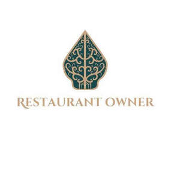

Trade Mark Journal No.2025/045 7 November 2025
UK00004273512 4 October 2025 (9,35,41,42,43)

- Class 9
- Platform software; Collaboration software platforms [software]; Computer software platforms; Software; Collaboration management software platforms; E-commerce software; Revision control platforms [software]; Software reliability software; Extranet software; Software testing software; Digital telephone platforms and software; Mobile software; Networking software; Enterprise software; Real-Time Collaborative Editing [RTCE] platforms [software]; Multimedia software; Digital solutions provider [DSP] software; Interface software; Interactive software; Software development tools; Programming software; Business technology software; Workflow software; System software; Interactive business software; Dashboard software; Plugin software; Computer software development tools; Collaboration tools [software]; Compiler software; Software compiler; Bioinformatics software; Software for online messaging; System support software; Optimisation software; Intranet software; Computer e-commerce software; Software suites; Computer software platforms, recorded or downloadable; Business software; Debugging software; Downloadable computer software for blockchain technology; Communications software; Entertainment software; Application suites [software]; Website development software; Media software; Social software; Server-side software; Digital dashboard software; Web development software; Collaboration software; Mobile application software; Embedded software; Publishing software; Application software for cloud computing services; Gaming software; Assistive software; Collaborative software; Software for smartphones; Business application software; Speech analytics software; Graphics software; Media development software; Middleware for management of software functions on electronic devices; Hardware testing software; Integrated software packages; Interactive database software; Software for mobile device management; Mobile device management software; Logistics software; Server software; Software for use in advertising; Communication software; Music software; Desktop publishing software; Antivirus software; Smartphone software; Web application software; Hardware reliability software; Software development programs; Software development kit [SDK]; Operating software; CAM software; AI software; Enterprise application software [EAS].
- Class 35
- Restaurant management for others; Business management of restaurants; Business advice relating to restaurant franchising; Business management assistance in the establishment and operation of restaurants; Business management assistance in the operation of restaurants; Business management of an airline company; Business management of car parking facilities; Business management for a trade company and for a service company; Business management of resort hotels; Business management for shops; Employee leasing; Hotel management service [for others]; Management of an airline company; Assistance in franchised commercial business management; Online ordering services in the field of restaurant take-out and delivery; On-line ordering services in the field of restaurant take-out and delivery; Business management of hotels; Hotels (Business management of -); Business management of retail outlets; Hotel management for others; Business management of visitor attractions; Business management of wholesale and retail outlets; Vehicle fleet (business management of a -) [for others]; Business management for freelance service providers; Business management of wholesale outlets; Provision of assistance [business] in the establishment of franchises; Business management of entertainers; Business management of hotels for others; Administrative hotel management; Business management of entertainment venues; Business assistance relating to the establishment of franchises; Commercial business management; Business management of theaters; Business management; Marketing in the framework of software publishing.
- Class 41
- Training relating to the restaurant industry; Education and training; Education services relating to the training of personnel in food technology; Education services relating to business training; Entertainment, education and instruction services; Educational services for providing courses of education; Education services; Provision of training and education; Provision of education and training; Education services for managerial staff; Educational and training services; English language education services; Education, entertainment and sport services; Online education services; Education courses relating to the travel industry; Career counselling [training and education advice]; Health education; Conducting of educational courses in business management; Career counseling [education]; School services for the teaching of languages; Team building (education); Education and instruction; Training in catering; Training of personnel in food technology; Education services relating to food technology; Business training services; Vocational training courses (Provision of -); Consultancy services relating to the education and training of management and of personnel; Organisation of competitions [education or entertainment]; Organisation of competitions (education or entertainment); Competitions (organisation of -) [education or entertainment]; Organisation of competitions for education or entertainment; Training of sports teachers; Guidance (Vocational -) [education or training advice]; Vocational guidance [education or training advice]; Education services relating to yoga; Sporting education services; Wine tasting services (education); Residential education courses relating to canoeing; Education, entertainment and sports; Business training; Organisation of competitions [education and/or entertainment]; Organization of competitions [education or entertainment]; Competitions (Organization of -) [education or entertainment]; Organization of competitions for education or entertainment; Arrangement of training courses in teaching institutes; Education services relating to the cinema; Education services relating to the provision of restaurant services; Adult education services relating to pharmacy; Organising of education seminars; Training of swimming teachers; Career and vocational training; Dietary education services; Residential training courses; School services for the teaching of construction draughting; Education services relating to cooking; Education services for imparting language teaching methods; Residential education courses relating to abseiling; Providing training courses on business management; Educational and training services relating to healthcare; Primary education services; Educational services relating to the teaching of french; Providing education courses relating to the travel industry; Physical fitness education services; Rental services relating to equipment and facilities for education, entertainment, sports and culture; Vocational skills training; Educational services relating to Japanese cuisine; Training in business skills; Education services relating to business franchise management; Health club services [health and fitness training]; Training in the design of software systems.
- Class 42
- Programming of software for e-commerce platforms; Software as a service [SaaS] featuring software platforms for electronic gaming; Software as a service [SaaS] featuring software platforms for graphic design; Platforms for gaming as software as a service [SaaS]; Programming of software for Internet platforms; Software as a service [SaaS] featuring computer software platforms for artificial intelligence; Platforms for graphic design as software as a service [SaaS]; Software as a service [SaaS] featuring software for machine learning; Software development in the framework of software publishing; Software as a service [SaaS] featuring software for deep learning; Software as a service [SaaS] featuring software for deep neural networks; Programming of software for information platforms on the Internet; Software customisation services; Design of software; Software design; Computer software design services; Services for the design of computer software; Software development services; Platforms for artificial intelligence as software as a service [SaaS]; Hosting services, software as a service, and rental of software; Software as a service; Computer software consultancy services; Computer and software consultancy services; Software consultancy services; Software development; Development of software; Software authoring; Programming of software for website development; Computer software programming services; Software engineering services; Development of computer hardware and software; Development of computer platforms; Computer software integration; Design and development of operating software for cloud computing networks; Design of software for embedded devices; Design and development of antivirus software; Design and development of computer hardware and software; Development of computer software application solutions; Consultancy (Computer software -); Computer software consultancy; Software as a service [SaaS]; Services for designing computer software; Computer hardware and software design; Design of computer hardware and software; Smartphone software design; Programming of software for database management; Programming of telecommunications software; Platform as a service [PaaS] featuring software platforms for transmission of images, audio-visual content, video content and messages; Consultancy and advice on computer software and hardware; Design and development of operating software for computer networks and servers; Design and development of computer database software; Services for the leasing of computer software; Programming of software for online advertising; Installation and customisation of computer applications software; Development of software for communication systems; Design of operating system software.
- Class 43
- Bar and restaurant services; Restaurant and bar services; Salad bars [restaurant services]; Sushi restaurant services; Beer bar services; Snack bar services; Wine bar services; Hookah bar services; Restaurant services incorporating licensed bar facilities; Bar services; Coffee bar services; Hotel restaurant services; Serving food and drink in restaurants and bars; Carvery restaurant services; Fast-food restaurant services; Take-out restaurant services; Take-away restaurant services; Ramen restaurant services; Restaurant services; Tapas bars; Tempura restaurant services; Providing food and drink in restaurants and bars; Cocktail lounge buffets; Juice bar services; Salad bars; Grill restaurants; Self-service restaurant services; Restaurant reservation services; Serving food and drink for guests in restaurants; Rental of bar equipment; Booking of restaurant seats; Carry-out restaurants; Japanese restaurant services; Washoku restaurant services; Wine bars; Mobile restaurant services; Spanish restaurant services; Udon and soba restaurant services; Bistro services; Restaurants; Food and drink catering for cocktail parties; Provision of food and drink in restaurants; Serving food and drink in doughnut shops; Catering of food and drinks; Bars; Restaurants (Self-service -); Self-service restaurants; Providing food and drink for guests in restaurants; Catering (Food and drink -); Food and drink catering; Catering of food and drink; Food and drink catering for banquets; Reservation of restaurants; Catering in fast-food cafeterias; Cocktail lounge services; Lounge services (Cocktail -); Shisha bars; Restaurant services for the provision of fast food; Serving food and drink in Internet cafes; Cafe services; Providing food and drink in bistros; Brasserie services; Providing reviews of restaurants and bars; Serving food and drinks; Serving food and drink for guests; Bar information services; Food and drink catering for institutions; Providing restaurant services; Takeaway food and drink services; Providing food and drink in doughnut shops; Cocktail lounges; Take-away food and drink services; Restaurant services provided by hotels; Catering for the provision of food and drink; Restaurant information services; Delicatessens [restaurants]; Hookah lounge services; Club services for the provision of food and drink; Fast food restaurants; Eateries; Tourist restaurants; Café services; Corporate hospitality (provision of food and drink); Juice bars; Hotel catering services; Guesthouse; Catering services for company cafeterias; Private members dining club services; Personal chef services; Resort hotel services; Rental of food service equipment; Providing hotel and motel services; Hotel reservations; Hotel reservation services; Reservation of hotel accommodation; Hotel services for preferred customers; Reservation and booking services for restaurants and meals; Coffee shop services; Business catering services; Appraisal of hotel accommodation; Guest house services; Providing room reservation and hotel reservation services.
Namrata Devkota